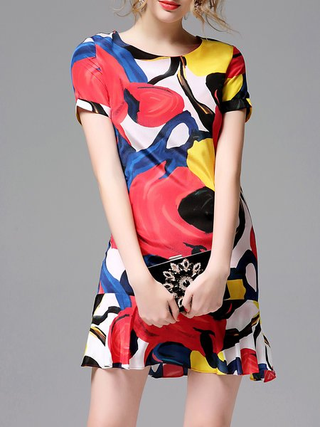
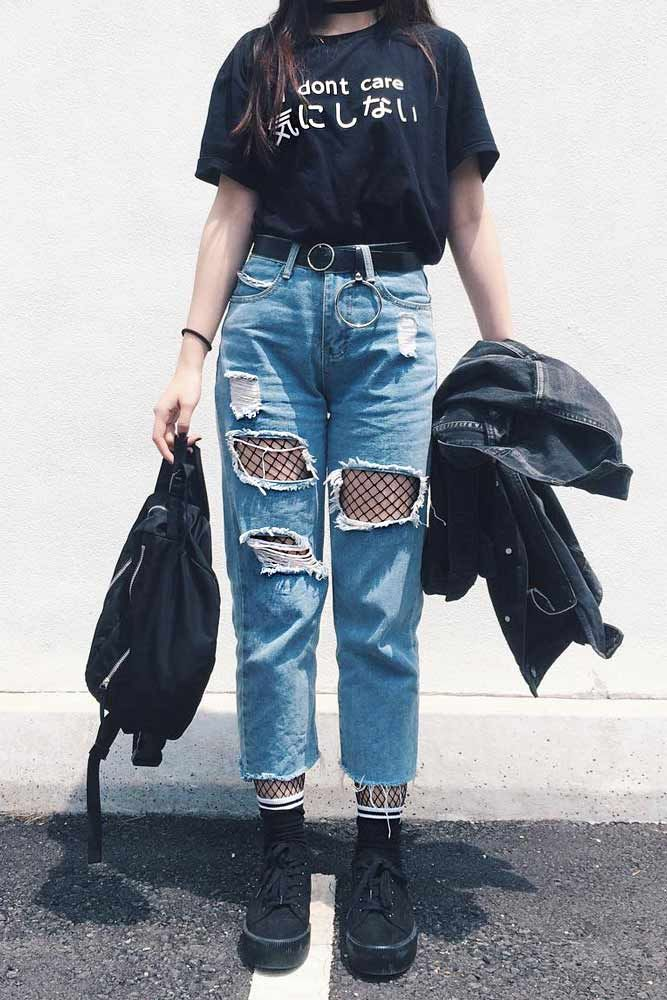
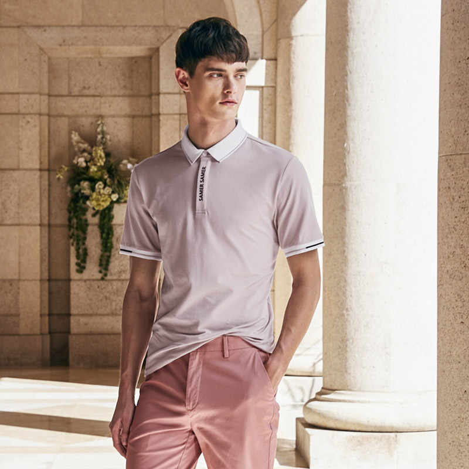
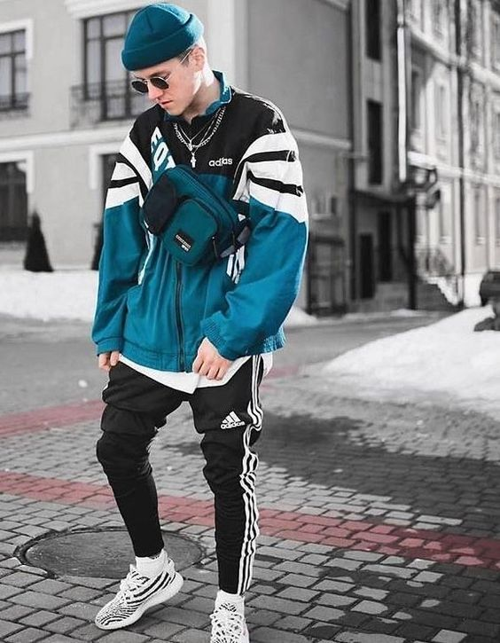

VINTAGE FASHION
Vintage clothing is all about the old classy looks and exquisiteness. These are fabrics and fashion that came into existence in a bygone era but bygones are not really so bygones. There are people and there is a fashion that comes and goes but the lure of vintage fashion always seems to be timeless. Vintage is old fashioned that never goes out of fashion. Old is gold and rightly so and once you go through my recommendations of some of the old school fashion you would certainly like to add some to your wardrobe. Denims, Capris, High boots, Skirts are some of the vintage fashion styles that are quite in trend.
ARTSY FASHION
Artsy is one style trend that has caught my eye and attention. It is wonderful to see women who like to wear stuff that makes a style statement of their own. The idea is to create something unconventional away from traditional styling. This may involve some very bold and bright colors, with exaggerated prints. The clothes would usually have unusual silhouettes and some weirdly unique shapes. Most of it is handcrafted and is homemade.

CASUAL FASHION
This is more of a formal style and it is better if we term it as business casuals. The casuals are still perfectly fine for a business meeting and office events. While men wear a blazer with matching pants with a formal shirt and sometimes a tie, women can wear slacks and skirts with proper tunics or blouses with a matching jacket. I recommend you keep enough business casuals in your collection for every occasion as they won’t fail to impress the onlookers anywhere you go.
GRUNGE FASHION
This clothing type is a result of the grunge music and originated in the 1980s. There was a heavy emphasis on creating oversized and layered silhouettes. This style specifically included flannel shirts, leather jackets, ripped denim, metallic jackets, crop tops, combat boots, slogan tees, fishnet stockings, mom jeans, slouchy sweaters, and beanies. Baggy clothing, torn and ripped and messy clothes are the characteristics of this style. This style has something for everyone so adopt this style in your attire and make an impact with your style statement.

PREPPY FASHION
This fashion style is inspired from the prep schools of North America and continue to influence the fashion of the contemporary world. But this fashion is now being embraced by people outside the campuses as well. Preppy fashion includes Khakis or straight-leg chinos, button-down oxfords, polo shirts, henley shirts, crew neck sweaters, short skirts, etc.

SPORTY FASHION
This style is rather an easy one to pick up and describe. It is all about sports. If you are a gym enthusiast or are someone who loves your morning runs, this style may have already been a part of you. In this style, girls will wear stuff from some popular sports companies such as Nike or Adidas with complementary runner shoes of some similar sports brands. The idea of this fashion is to flaunt the sports out of them. This is an effortless style as it does not involve running behind flashy stuff. Just some tight runner pants, basic tees, and that ponytail do the trick.
